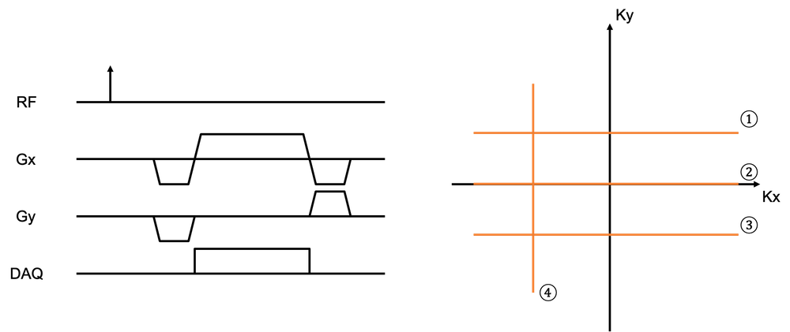

MRI Questions#
Note that questions may have multiple possible answers.
MRI System#
Clinical MRI systems (i.e. 3T and 1.5T) operate in the same frequency range as ..
Xray
Visible light
FM
AM
The main magnetic field, \(B_0\), is for …
polarization
excitation
acquisition
Which coil(s) generates a magnetic field(s) that are perpendicular to the main field \(B_0\)?
RF coils
gradient coils in the x direction
gradient coils in the y direction
gradient coils in the z direction
(T/F) In MRI, the imaging plane is determined by proper assignment on the x, y, and z gradients
Match the following components with the approximate amplitude of their magnetic field
Components: \(B_0\), RF transmit coil, RF receive coil, magnetic field gradients
frequency of magnetic field: 0 Hz, 1 kHz, 100 MHz
amplitude of magnetic field: 1 \(\mu T\) , 10 \(\mu T\), 10 \(m T\), 1 \( T\)
Which of the following steps are conducted in a calibration scan?
Center frequency / B0 calibration
RF power, transmit gain
RF receiver gain
Gradient calibration
MR Physics#
Which of the following isotopes cannot be imaged with MRI?
\(^1H\)
\(^{12}C\)
\(^{13}C\)
\(^{19}F\)
\(^2H\)
Human tissue is …
diamagnetic
paramagnetic
ferromagnetic
(T/F) When placed in a magnetic field, all the protons (\(^1 H\)) in the body will line up with the field.
(T/F) When placed in a magnetic field, spins immediately are preferentially aligned with that field.
(T/F) A spin’s precession frequency (Larmor frequency) is proportional to the magnetic field it’s in.
(T/F) The net magnetization, \(\vec{M}\), does not precess at equilibirum.
To create signals in MRI, we need to apply an RF pulse that is …
perpendicular to the main field \(B_{0}\), oscillating at frequency \(0\) Hz (static)
parallel to the main field \(B_{0}\), oscillating at frequency \(0\) Hz (static)
parallel to the main field \(B_{0}\), oscillating at a frequency \(\gamma B_0\)
perpendicular to the main field \(B_{0}\), oscillating at a frequency \(\gamma B_0\)
(T/F) The z-axis is the same in lab and rotating frame.
RF Coils#
(T/F) The RF receive coils detect magnetic flux directly when collecting signals.
What are the benefit(s) of using phased array receive coils?
Increase FOV
Increase SNR
Enables parallel imaging acceleration
Enables compressed sensing acceleration
Contrast#
(T/F) Proton density represents the density of all the protons in a given tissue.
The recovery of longitudinal magnetization is proportional to …
\(e^{t/T_1}\)
\(1- e^{t/T_1}\)
\(e^{t/T_2}\)
\(1-e^{t/T_2}\)
The decay of the transverse magnetization is proportional to …
\(e^{t/T_1}\)
\(1- e^{t/T_1}\)
\(e^{t/T_2}\)
\(1-e^{t/T_2}\)
(T/F) The amplitude of the net magnetization doesn’t change during relaxation.
Which of the following equations is correct?
\(T_2 \ge T_2^* \ge T_1\)
\(T_2^* \ge T_2 \ge T_1\)
\(T_1 \ge T_2 \ge T_2^*\)
\(T_1 \ge T_2^* \ge T_2\)
T2* relaxation depends on …
magnetic field inhomogeneities
spin-spin interactions
spin-lattice interactions
longitudinal relaxation
(T/F) \(M_Z\) doesn’t contribute to the MR signal.
Calculate the signal in a spin-echo sequence with a 90-degree flip angle \(M_0(1-e^{-TR/T1})e^{-TE/T2}\) when TR = ∞
\(M_0\)
\(0\)
\(M_0(1-e^{-TR/T1})\)
\(M_0 e^{-TE/T2}\)
Calculate the signal in a spin-echo sequence with a 90-degree flip angle \(M_0(1-e^{-TR/T1})e^{-TE/T2}\) when TE = ∞
\(M_0\)
\(0\)
\(M_0(1-e^{-TR/T1})\)
\(M_0 e^{-TE/T2}\)
A longer TR …
increases T1 weighting
reduces T1 weighting
increases T2 weighting
reduces T2 weighting
A longer TE …
increases T1 weighting
reduces T1 weighting
increases T2 weighting
reduces T2 weighting
What flip angle gives the highest SNR for a spoiled gradient echo pulse sequence?
45-degrees
90-degrees
180-degrees
\(\cos^{-1} ( \exp(-TR/T_1) )\)
The signal of an inversion recovery pulse sequence in the steady-state is proportional to …
\(M_{0}\cdot(1-2e^{-TI/T1})\)
\(M_{0}\cdot(1-e^{-TR/T1})\)
\(M_{0}\cdot(1-e^{-TI/T1}+e^{-TR/T1})\)
\(M_{0}\cdot(1-2e^{-TI/T1}+e^{-TR/T1})\)
(T/F) In a spin-echo sequence, the dephasing of spins in the transverse plane is only eliminated at the spin-echo.
Which of the following image contrasts can be generated by a spin-echo pulse sequence?
PDw
T1w
T2w
T2*w
What magnetic resonance property is used to perform fat/water (Dixon) imaging?
Proton density
T1
T2
T2*
Chemical Shift
What are the minimum measurements required to create separate fat and water images?
In-phase TE
Out-of-phase TE
In-phase TE & Out-of-phase TE
What is “magnetization preparation” used for?
polarization
data acquisition
create additoinal contrast
tissue suppression
(T/F) Multiple readouts can be used following a magnetization preparation pulse to improve efficiency
Pulse Sequence#
Which of the following are typically components of a pulse sequence diagram?
RF Pulses
Main field (\(B_0\))
Magnetic field gradients (\(G_X, G_Y, G_Z\))
Data acquisition (DAQ)
In a typical pulse sequence, identify the gradients that serve the following functions:
spoil transverse magnetization
refocus Mxy phase across the slice
move to the edge of k-space
Which of the following statement is true for the slice select refocusing gradient?
The slice select refocusing gradient must have the same gradient amplitude with the slice selective excitation pulse.
The slice select refocusing gradient must have the same gradient area with the slice selective excitation pulse.
The slice select refocusing gradient can overlap with the prewinder of the frequency encoding gradient.
The slice select refocusing gradient can overlap with the gradient echo.
(T/F) For 2D FT imaging, gradient spoiling is usually applied in the slice select direction because the voxel size is larger thus more dephasing can happen within a voxel in that direction.
(T/F) For a GRE or SE with no phase encoding gradient, the k-space position at TE equals 0 (i.e, \(\vec{k}(TE) = 0\)).
RF Pulses#
What is the flip angle θ (in radians) of a constant amplitude (hard) RF pulse with an amplitude \(B_{1,0}\) and duration \(\tau\)?
\(\theta = \gamma B_{10} \tau\)
\(\theta = \gamma B_{0} \tau\)
\(\theta = B_{10} \tau\)
\(\theta = \gamma \tau\)
(T/F) When describing the RF excitation, we usually neglect the relaxation terms in the Bloch equations because the RF pulse duration is usually much shorter than the relaxation time constants.
(T/F) A constant amplitude 180° pulse that is the same duration as a constant amplitude 90° pulse requires twice the power.
In slice-selective excitation, thinner slices can be achieved by
decreasing the RF pulse bandwidth, \(BW_{RF}\)
decreasing the receive BW
decreasing the slice-select gradient strength
increasing the slice-select gradient strength
Spatial Encoding#
(T/F) During frequency encoding, the MRI signal is in the time domain, corresponding to the spatial frequency domain. The Fourier Transform of the signal is in the frequency domain, which corresponds to the image domain.
When is slice selective gradient turned on?
during the RF excitaiton pulse
between the RF excitation and the readout
during the echo (readout)
When is the frequency encoding gradient turned on?
during the RF excitaiton pulse
between the RF excitation and the readout
during the echo (readout)
When is phase encoding gradient turned on?
during the RF excitaiton pulse
between the RF excitation and the readout
during the echo (readout)
When is DAQ turned on during a 2D FT sequence?
When the slice selective gradient is on
When the RF is on
When the phase encoding gradient is on
When the frequency encoding gradient is on
According to the Nyquist theorem, to avoid aliasing:
The sampling frequency must be at least half the highest frequency in the signal
The sampling frequency must be at least twice the lowest frequency in the signal
The sampling frequency must be at least twice the highest frequency in the signal
The sampling frequency must be at least half the lowest frequency in the signal
(T/F) Aliasing occurs because of oversampling.
(T/F) During 2D multislice imaging, acquisition for one slice must be completed before the acquisition for the next slice can start.
Which k-space line is acquired by the following magnetic field gradients? 
In 3DFT imaging, the gradient added to the slice encoding axis (compared to a 2DFT) is a …
frequency encoding gradient
phase encoding gradient
either frequency or phase encoding gradient
Image Reconstruction#
For a real-valued image \(m(x,y)\), which of the following equation holds for its k-space data \(M(k_x,k_y)\)?
\(M(k_x,k_y) = M(-k_x,-k_y)\)
\(M(k_x,k_y) = -M(-k_x,-k_y)\)
\(\mathcal{Real}\{M(k_x,k_y)\} = \mathcal{Real}\{ M(-k_x,-k_y) \}\)
\(\mathcal{Imag}\{M(k_x,k_y) \} = \mathcal{Imag}\{M(-k_x,-k_y) \}\)
(T/F) In MRI we only look at the magnitude images.
(T/F) The center of k-space always contains the maximum signal.
Image Characteristics (FOV and Resolution)#
The field of view is inversely proportional to…
receiver BW (RBW)
readout gradient strength (Gxr)
TR
TE
The field of view is directly proportional to…
receiver BW (RBW)
readout gradient strength (Gxr)
TR
TE
(T/F) An anti-aliasing filter can be applied in the phase encoding direction.
The resolution in frequency encoding direction ( \(\delta_x\) ) is equal to …
\( \frac{1}{W_{kx}} \)
\( \frac{1}{\frac{\gamma}{2\pi} G_{xr} t_{read}} \)
\( \frac{FOV_x}{N_{FE}} \)
None of the above
SNR#
SNR can be increased by …
decreasing voxel size
increasing total time
increasing NEX
Artifacts#
Chemical shift displacement artifact is characterized by …
signal stretch and pile-up
bright and dark bands
Gibbs ringing
ghosting
Susceptibility displacement artifact is characterized by …
signal stretch and pile-up
bright and dark bands
Gibbs ringing
ghosting
Truncation artifacts can be reduced by …
improving resolution
filtering in k-space
increasing FOV
increasing NEX
(T/F) Motion artifacts occur only along the phase-encoding direction.
Fast Imaging Pulse Sequences#
What does it mean to use a multiple spin echo pulse sequence?
multiple spin echoes are created following a single excitation pulse
multiple k-space lines acquired sequentially
multiple gradient-echo repetitions after a magnetization preparation pulse
fully refocused gradients and no spoiling in every TR
What types of contrast can be created with a multiple spin echo pulse sequence?
proton density weighted
T1 weighted
T2 weighted
T2* weighted
What are the limitations of multiple spin echo pulse sequences?
Chemical shift and susceptibility displacement artifacts
T2 blurring artifacts
ghosting
SAR
What does it mean to use echo planar imaging (EPI)?
multiple spin echoes are created following a single excitation pulse
multiple k-space lines acquired sequentially
multiple gradient-echo repetitions after a magnetization preparation pulse
fully refocused gradients and no spoiling in every TR
What are the advantages of EPI?
Create additional T1, T2, and/or T2* contrast
Rapidly acquire k-space
Robust to motion
Repeated refocusing of intravoxel dephasing
What are the artifacts associated with EPI?
Chemical shift displacement
Distortion due to magnetic susceptibility differences
T2* blurring
ghosting
What does it mean to use balanced steady-state free-precession (bSSFP)?
multiple spin echoes are created following a single excitation pulse
multiple k-space lines acquired sequentially
multiple gradient-echo repetitions after a magnetization preparation pulse
fully refocused gradients and no spoiling in every TR
Accelerated Imaging Methods#
Match the acceleration methods
Partial Fourier
Parallel Imaging
Compressed Sensing
Deep Learning
with the following concept they rely on:
conjugate symmetry in k-space
spatial encoding from receive coil arrays
a sparse representation of the image
training on prior images to learn expected patterns
(T/R) Partial Fourier, parallel imaging, and compressed sensing or deep learning reconstructions can be used simultaneously.
How is coil sensitivity information gathered for parallel imaging?
It is stored in a database on the scanner
A separate scan to measure coil sensitivity maps
Using fully-sampled data from the center of k-space
Using fully-sampled data from outer k-space
What is the “g-factor” in parallel imaging?
How much faster scan can be performed
Describes noise amplification
Describes SNR loss
Describes magnetic field gradients
Compared to the SNR a fully sampled acquistion (\(SNR_{full}\)), the SNR Of a parallel imaging acquisition (\(SNR_{PI}\)) with an acceleration factor, \(R\), and \(g\)-factor is
\(SNR_{PI} = SNR_{full}\)
\(SNR_{PI} = SNR_{full} / \sqrt{R}\)
\(SNR_{PI} = SNR_{full} / g(\vec{r}) \)
\(SNR_{PI} = SNR_{full} / (g(\vec{r}) \sqrt{R})\)
(T/F) Parallel imaging undersampling can be performed in any direction, regardless of the RF coil configuration.
Simultaneous multi-slice parallel imaging
enables acceleration in the slice direction
requires no modifications to the pulse sequence
requires RF pulses that excite multiple slices
requires coil sensitivity information
What type of k-space sampling is required for compressed sensing?
full sampling
equally spaced undersampling
equally spaced undersampling with fully-sampled center of k-space
pseudo-random undersampling
At least how many training datasets are typically required to develop deep learning MRI reconstruction methods?
1
10-100
1000-10,000
100,000-1,000,000
Generalization problems can arise in deep learning MRI reconstruction methods when applied to situations that area different from the training data in which of the following ways:
different anatomy
different contrasts
different sampling patterns
different B0
Which type of architecture is commonly used for physics-based deep learning MRI reconstruction networks?
Encoder-decoder
Unet
Unrolled
Recurrant